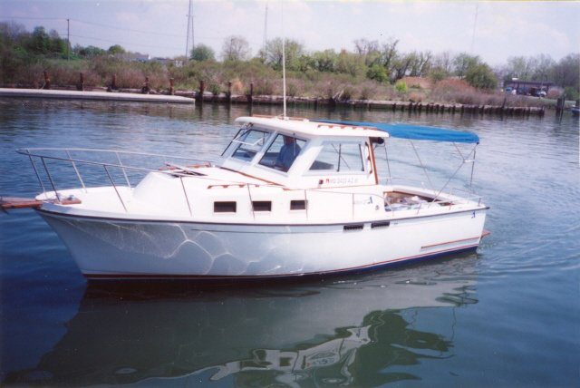

B-Atlas Boat Guide · ALBN-27-SP
Albin 27 Sport Cruiser
1985–1995
The Albin 27 Sport Cruiser is the open-cockpit derivative of the 27 Family Cruiser. It retains the solid-fiberglass semi-displacement hull, shallow draft, single-diesel economy and full-length keel, but replaces the aft sleeping cabin with a much larger working cockpit. The result favors fishing, diving and simple couple cruising over accommodation privacy.

- Length
- 26.75 ft
- Beam
- 9.67 ft
- Draft
- 2.5 ft
- Hull behaviour
- Semi-Displacement
- Fuel
- Diesel
- Propulsion
- Shaft
- Engine configuration
- Single Inboard
- Boat family
- Cruiser
- Construction
- Solid fiberglass hull; cored deck and pilothouse areas
Best for
- Couples wanting a simple diesel cruiser with a large cockpit
- Fishing, diving and coastal utility use
- Shallow-water inland and Intracoastal cruising
Trade-offs
- Less sleeping privacy and capacity than the Family Cruiser
- Compact forward cabin and head
- Performance remains moderate rather than genuinely fast
- Older diesel installations and refits vary widely
Known concerns
- No model-specific concern has been promoted to B-Atlas’s evidence threshold. This does not mean the model has no age-, condition- or hull-specific risks.
Inspection focus
- Confirm engine installation and repower quality
- Inspect deck, cabin-top and window areas for moisture where cored
- Inspect fuel, exhaust, raw-water cooling, shaft and steering systems
- Review wiring, plumbing and owner modifications
Continue researching
Related boat models
Albin 25 Motor Cruiser
25 ft · Displacement
Albin 27 Family Cruiser
26.75 ft · Semi-Displacement
Albin 28 Tournament Express Engine Box
29.92 ft · Planing
Albin 28 Tournament Express Flush Deck
29.92 ft · Planing
Albin 30 Family Cruiser
31.42 ft · Semi-Displacement
Jeanneau Merry Fisher 795 Series 1 / Series 2
26.75 ft · Planing
About this record
B-Atlas preserves uncertainty: missing information remains unknown rather than being treated as a negative. Specifications and guidance describe the model record; individual boats can differ by year, equipment, refit and condition.